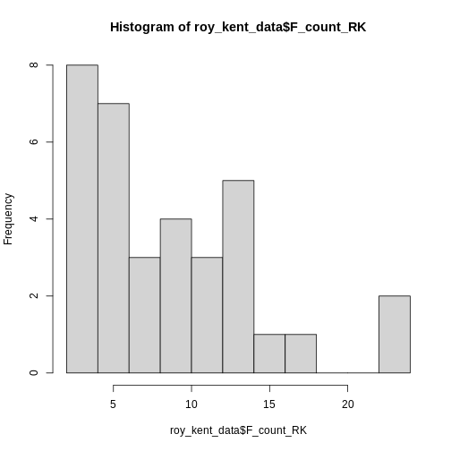

Content from Introduction
Last updated on 2025-03-17 | Edit this page
Overview
Questions
- What is this all about?
Objectives
- Explain the general structure of this introductory course
- Explain how to submit “homework” assignments
Introduction
This is the accompanying website to the Empra Differentielle Psychologie of Heidelberg University. It is authored and used by Sven Lesche. This course aims to cover:
- Some R basics and how to structure code
- Getting a first glimpse of data
- Cleaning data
- Running some analysis
Lesson Structure
The entire course is organized in short “Episodes” intended to take
around 10-15mins to read and around 5-10mins to complete the challenges
below. You will complete approximately one episode per week. At the end
of each episode, you will upload a script containing the solutions to
the challenges. The file format should be:
lessonnumber_solutions_name_surname.R. Upload the script
containing your solutions to a HeiBox folder and share that folder with
me.
A word about Chat-GPT
Chat-GPT is an amazing tool that makes it much easier to just try something out. Importantly, it can take a lot of work off your hands, especially early on in your learning process. Most of the challenges here can just be solved by plugging them into a LLM like Chat-GPT. I encourage you to first try to find a solution yourself. You will learn a lot more by failing yourself first and continuing to try.
Nonetheless, sometimes it may be necessary to ask Chat-GPT or google a solution. In real data analysis, this is done a lot! Nobody knows anything. However, the most important thing for now is that you understand the code you write. Thus, if you use Chat-GPT, make it explain to you why this code works and what it is doing or ask it for hints instead of the solution.
Accompanying Material
This course relies heavily on R for Data Science (2e), which can be treated as an accompanying textbook.
Questions & Support
This is the first version of the new course material. If you have any questions or notice any inconsistencies / opportunities for improvement, feel free to reach out to to me via mail or Slack. If you feel comfortable using GitHub, also feel free to submit an issue.
Some opportunities for improvement are: - Is the material sufficiently explained? Can you follow? - Are the exercises too difficult / not enough to practice material learned in an episode? - Are you missing any information to complete following episodes? - Is there information missing or information that you do not require?` - Are there any typos / wrong examples? - Whatever else comes to mind.
Feel free to reach out to me via any of the channels with your feedback. I will try to implement it as soon as possible. Thank you for your help in making this course better for coming students!
Key Points
- Follow the structured outline to learn R basics and data analysis
- Submit weekly scripts following the specified format
- Contact me via mail or Slack for any queries
Content from R Setup
Last updated on 2025-03-14 | Edit this page
Overview
Questions
- What is R, what is R Studio?
- How to work with the R console and R scripts?
- What is an R package?
Objectives
- To gain familiarity with the various panes in the RStudio IDE
- To gain familiarity with the buttons, short cuts and options in the RStudio IDE
- To understand variables and how to assign to them
- To be able to manage your workspace in an interactive R session
- To be able to use mathematical and comparison operations
- To be able to call functions
- Introduction to package management
Introduction to RStudio
Welcome to the R portion of the Empra. This first lesson is adapted from resbaz’s introction to R workshop.
Throughout this lesson, you’re going to learn some of the fundamentals of the R language as well as some best practices for organizing code for scientific projects that will make your life easier.
We’ll be using RStudio: a free, open source R integrated development environment. It provides a built in editor, works on all platforms (including on servers) and provides many advantages such as integration with version control and project management.
Basic layout
When you first open RStudio, you will be greeted by three panels:
- The interactive R console (entire left)
- Environment/History (tabbed in upper right)
- Files/Plots/Packages/Help/Viewer (tabbed in lower right)

Once you open files, such as R scripts, an editor panel will also open in the top left.
Work flow within RStudio
There are two main ways one can work within RStudio.
- Test and play within the interactive R console then copy code into a
.R file to run later.
- This works well when doing small tests and initially starting off.
- It quickly becomes laborious
- Start writing in an .R file - called a script - and use RStudio’s
command / short cut to push current line, selected lines or modified
lines to the interactive R console.
- This is a great way to start; all your code is saved for later
- You will be able to run the file you create from within RStudio or
using R’s
source()function.
For now, let’s stick with the console. We will learn more about how to use R scripts later. Feel free to run all code examples provided here in your own RStudio console and figure out what they do.
Introduction to the R console
Much of your time in R will be spent in the R interactive console.
This is where you will run all of your code, and can be a useful
environment to try out ideas before adding them to an R script file.
This console in RStudio is the same as the one you would get if you just
typed in R in your commandline environment.
The first thing you will see in the R interactive session is a bunch of information, followed by a “>” and a blinking cursor. R operates on the idea of a “Read, evaluate, print loop”: you type in commands, R tries to execute them, and then returns a result.
Using R as a calculator
The simplest thing you could do with R is do arithmetic:
R
1 + 100
OUTPUT
[1] 101And R will print out the answer, with a preceding “[1]”. Don’t worry about this for now, we’ll explain that later. For now think of it as indicating output.
If you type in an incomplete command, R will wait for you to complete it:
OUTPUT
+Any time you hit return and the R session shows a “+” instead of a “>”, it means it’s waiting for you to complete the command. If you want to cancel a command you can simply hit “Esc” and RStudio will give you back the “>” prompt.
Tip: Cancelling commands
If you’re using R from the commandline instead of from within
RStudio, you need to use Ctrl+C instead of Esc
to cancel the command. This applies to Mac users as well!
Cancelling a command isn’t just useful for killing incomplete commands: you can also use it to tell R to stop running code (for example if its taking much longer than you expect), or to get rid of the code you’re currently writing.
When using R as a calculator, the order of operations is the same as you would have learnt back in school.
From highest to lowest precedence:
- Parentheses:
(,) - Exponents:
^or** - Divide:
/ - Multiply:
* - Add:
+ - Subtract:
-
R
3 + 5 * 2
OUTPUT
[1] 13Use parentheses to group operations in order to force the order of evaluation if it differs from the default, or to make clear what you intend.
R
(3 + 5) * 2
OUTPUT
[1] 16This can get unwieldy when not needed, but clarifies your intentions. Remember that others may later read your code.
R
(3 + (5 * (2 ^ 2))) # hard to read
3 + 5 * 2 ^ 2 # clear, if you remember the rules
3 + 5 * (2 ^ 2) # if you forget some rules, this might help
The text after each line of code is called a “comment”. Anything that
follows after the hash (or octothorpe) symbol # is ignored
by R when it executes code.
Really small or large numbers get a scientific notation:
R
2/10000
OUTPUT
[1] 2e-04Which is shorthand for “multiplied by 10^XX”. So
2e-4 is shorthand for 2 * 10^(-4).
You can write numbers in scientific notation too:
R
5e3 # Note the lack of minus here
OUTPUT
[1] 5000Mathematical functions
R has many built in mathematical functions. To call a function, we simply type its name, followed by open and closing parentheses. Anything we type inside the parentheses is called the function’s arguments:
R
sin(1) # trigonometry functions
OUTPUT
[1] 0.841471R
log(1) # natural logarithm
OUTPUT
[1] 0R
log10(10) # base-10 logarithm
OUTPUT
[1] 1R
exp(0.5) # e^(1/2)
OUTPUT
[1] 1.648721Don’t worry about trying to remember every function in R. You can simply look them up on Google, or if you can remember the start of the function’s name, use the tab completion in RStudio.
This is one advantage that RStudio has over R on its own, it has autocompletion abilities that allow you to more easily look up functions, their arguments, and the values that they take.
Typing a ? before the name of a command will open the
help page for that command. As well as providing a detailed description
of the command and how it works, scrolling to the bottom of the help
page will usually show a collection of code examples which illustrate
command usage. Try reading the description to the log()
function by typing ?log() (or just ?log) in
the console.
Comparing things
Another useful feature of R next to functions are comparisons. Quite often, we want to see if one value is bigger than another or only use data with some particular value.
We can check if two values are equal by using the equality operator
==.
R
1 == 1 # equality (note two equals signs, read as "is equal to")
OUTPUT
[1] TRUER
1 != 2 # inequality (read as "is not equal to")
OUTPUT
[1] TRUER
1 < 0 # less than
OUTPUT
[1] FALSER
1 <= 1 # less than or equal to
OUTPUT
[1] TRUER
1 > 1 # greater than
OUTPUT
[1] FALSER
1 >= 1 # greater than or equal to
OUTPUT
[1] TRUEVariables and assignment
In the previous example, we simply used numbers to do comparisons.
However, most work in R will be done using variables. A
variable can be any quality, quantity or property we might be interested
in, like a response time, a score on a personality test or a diagnosis.
We can store values in variables using the assignment operator
<-, like this:
R
x <- 1/40
Notice that assignment does not print a value. Instead, we stored it
for later in something called a variable.
x now contains the value
0.025:
R
x
OUTPUT
[1] 0.025Look for the Environment tab in one of the panes of
RStudio, and you will see that x and its value have
appeared. Our variable x can be used in place of a number
in any calculation that expects a number:
R
log(x)
OUTPUT
[1] -3.688879Notice also that variables can be reassigned:
R
x <- 100
x used to contain the value 0.025 and and now it has the
value 100.
We can also update the value of a variable and store it with the same name again.
R
x <- x + 1 #notice how RStudio updates its description of x on the top right tab
The right hand side of the assignment can be any valid R expression.
The right hand side is fully evaluated before the assignment
occurs. This means that in the above example, x + 1 is
evaluated first and the result is only then assigned to the new
x.
Variable names can contain letters, numbers, underscores and periods. They cannot start with a number nor contain spaces at all. Different people use different conventions for long variable names, these include
- periods.between.words
- underscores_between_words
- camelCaseToSeparateWords
What you use is up to you, but be consistent.
R
this_is_okay
this.is.also.okay
someUseCamelCase
dont_be.aMenace_toSociety
I always use snake_case for variable names in R.
camelCase is often used in other programming languages such
as MATLAB or JavaScript.
Callout
It is also possible to use the = operator for
assignment:
R
x = 1/40
But this is much less common among R users. The most important thing
is to be consistent with the operator you use. There
are occasionally places where it is less confusing to use
<- than =, and it is the most common symbol
used in the community. So the recommendation is to use
<-.
If we try to give a variable an invalid name, R will throw an error.
ERROR
Error in parse(text = input): <text>:1:2: unexpected input
1: 2_
^Tip: Warnings vs. Errors
Pay attention when R does something unexpected! Errors, like above, are thrown when R cannot proceed with a calculation. Warnings on the other hand usually mean that the function has run, but it probably hasn’t worked as expected.
In both cases, the message that R prints out usually give you clues how to fix a problem.
Errors can be frustrating, but they are your friend! They tell you that something went wrong and usually give you an informative message as to what went wrong. If you cannot make something of the error message, try pasting it into Google or Chat-GPT, this will often help.
Challenges
Challenge 2
What will be the value of each variable after each statement in the following program? You are encouraged to run these commands in R.
R
mass <- 47.5
age <- 122
mass <- mass * 2.3
age <- age - 20
Challenge 3
Run the code from the previous challenge, and write a command to compare mass to age. Is mass larger than age?
Key Points
- R Studio is a shiny environment that helps you write R code
- You can either write code directly in the console, or use script to organize and save your code
- You can assign variables using
<- - Be consistent in naming variables, other people should be able to read and understand your code
Content from Packages in R
Last updated on 2025-03-14 | Edit this page
Overview
Questions
- What is an R package?
- How can we use R packages
Objectives
- Explain how to use R packages
- Explain how to install R packages
- Understand the difference between installing and loading an R package
R Packages
Per default, R provides you with some basic functions like
sum(), mean() or t.test(). These
functions can already accomplish a lot, but for more specialized
analyses or more user-friendly functions, you might want to use
additional functions.
If you are in need of a specific function to achieve your goal, you can either write it yourself (more on this later) or use functions written by other users. These functions are often collected in so-called “packages”. The official source for these packages on R is CRAN (the comprehensive R archive network).
Packages you may encounter
Packages make R really powerful. For 95% of your analysis-needs,
there probably exists a package designed specifically to hand this. For
example, some packages you might use often are tidyverse
for data cleaning, psych for some psychology specific
functions, afex for ANOVAs or lme4 for
multi-level models. You can even use R packages for more complicated
analyses like structural equation models (lavaan) or
bayesian modeling (brms). You can even write papers using R
using papaya. Even this website was written using the
R-packages rmarkdown and sandpaper.
CRAN makes it really easy to use the over 7000 R packages other users
provide. You can install them using
install.packages("packagename") with the name of the
package in quotation marks. This installs all functionalities of this
packages on your machine. However, this package is not automatically
available to you. Before using it in a script (or the console) you need
to tell R to “activate” this package. You can do this using
library(packagename). This avoids loading all installed
packages every time R is starting (which would take a while).
Using functions without loading a package
If you are only using a few functions from a certain package (maybe
even only once), you can avoid loading the entire package and only
specifically access that function using the :: operator.
You can do this by typing packagename::function(). If the
package is installed, it will allow you to use that function without
calling library(packagename) first. This may also be useful
in cases where you want to allow the reader of your code to easily
understand what package you used for a certain function.
Demonstration
First, we need to install a package. This will often generate a lot of text in your console. This is nothing to worry about. In most cases, it is enough to look at the last few messages, they will tell you what went wrong or whether everything went right.
R
install.packages("dplyr")
OUTPUT
The following package(s) will be installed:
- dplyr [1.1.4]
These packages will be installed into "~/work/r-for-empra/r-for-empra/renv/profiles/lesson-requirements/renv/library/linux-ubuntu-jammy/R-4.4/x86_64-pc-linux-gnu".
# Installing packages --------------------------------------------------------
- Installing dplyr ... OK [linked from cache]
Successfully installed 1 package in 7.3 milliseconds.Then, we will need to load the package to make its functions
available for use. For most packages, this will also print a lot of
messages in the console in the bottom left. Again, this is usually
harmless. If something does go wrong, you will see the word
Error: along with a message somewhere.
Warnings: can often be ignored in package installation.
R
# Loading the package dplyr
library(dplyr)
OUTPUT
Attaching package: 'dplyr'OUTPUT
The following objects are masked from 'package:stats':
filter, lagOUTPUT
The following objects are masked from 'package:base':
intersect, setdiff, setequal, unionNow we can use all the functions that dplyr provides.
Let’s start by using glimpse() to get a quick glance at
some data. For this case, we are using the iris data, that
comes with your default R installation.
R
# iris is a dataset provided as default in R
glimpse(iris)
OUTPUT
Rows: 150
Columns: 5
$ Sepal.Length <dbl> 5.1, 4.9, 4.7, 4.6, 5.0, 5.4, 4.6, 5.0, 4.4, 4.9, 5.4, 4.…
$ Sepal.Width <dbl> 3.5, 3.0, 3.2, 3.1, 3.6, 3.9, 3.4, 3.4, 2.9, 3.1, 3.7, 3.…
$ Petal.Length <dbl> 1.4, 1.4, 1.3, 1.5, 1.4, 1.7, 1.4, 1.5, 1.4, 1.5, 1.5, 1.…
$ Petal.Width <dbl> 0.2, 0.2, 0.2, 0.2, 0.2, 0.4, 0.3, 0.2, 0.2, 0.1, 0.2, 0.…
$ Species <fct> setosa, setosa, setosa, setosa, setosa, setosa, setosa, s…R
# Using a function without loading the entire package
# dplyr::glimpse(iris)
Here, we can see that iris has 150 rows (or
observations) and 5 columns (or variables). The first four variables are
size measurements regarding length and width of sepal and petal and the
fifth variable is a variable containing the species of flower.
Challenges
Challenge 1:
Install the following packages: dplyr,
ggplot2, and psych.
Challenge 2:
Load the package dplyr and get an overview of the data
mtcars using glimpse().
Challenge 3:
Figure out what kind of data mtcars contains. Make a
list of the columns in the dataset and what they might mean.
Hint
You are allowed to use Google (or other sources) for this. It is common practice to google information you don’t know or look online for code that might help.
Challenge 4:
Use the function describe() from the package
psych without loading it first.
What differences do you notice between glimpse() and
describe()?
Key Points
- R packages are “add-ons” to R, they provide useful new tools.
- Install a package using
install.packages("packagename"). - Use a package using
library(packagename)at the beginning of your script. - Use
::to access specific functions from a package without loading it entirely.
Content from Vectors and variable types
Last updated on 2025-03-14 | Edit this page
Overview
Questions
- How do you use scripts in R to document your work?
- How can you organize scripts effectively?
- What is a vector?
Objectives
- Show how to use scripts to generate reproducible analyses
- Explain what a vector is
- Explain variable types
- Show examples of
sum()andmean()
Scripts in R
For now, we have been only using the R console to execute commands. This works great if there are some quick calculations you have to run, but is unsuited for more complex analyses. If you want to reproduce the exact steps you took in data cleaning and analyses, you need to write them down - like a recipe.
This is where R scripts come in. They are basically like a text file (similar to Word) where you can write down all the steps you took. This makes it possible to retrace them and produce the exact same result over and over again.
In order to use R scripts effectively, you need to do two things.
Firstly, you need to write them in a way that is understandable in the
future. We will learn more about how to write clean code in future
lessons. Secondly (and maybe more importantly) you need to actually
save these scripts on your computer, and ideally save
them in a place where you can find them again. The place where you save
your script and especially the place you save your data should ideally
be a folder in a sensible place. For example, this script is saved in a
sub-folder episodes/ of the workshop folder
r_for_empra/. This makes it easy for humans to find the
script. Aim for similar clarity in your folder structure!
For this lesson, create a folder called r_for_empra
somewhere on your computer where it makes sense for you. Then, create a
new R script by clicking File > New File > R Script
or hitting Ctrl + Shift + N. Save this script as
episode_projects_and_scripts.R in the folder
r_for_empra created above. Follow along with the episode
and note down the commands in your script.
Using a script
Let’s start learning about some basic elements of R programming. We
have already tried assigning values to variables using the
<- operator. For example, we might assign the constant
km_to_m the value 1000.
R
km_to_m <- 1000
Now, if we had data on distances in km, we could also use this value to compute the distance in meters.
R
distance_a_to_b_km <- 7.56
distance_a_to_b_m <- distance_a_to_b_km * km_to_m
If we have multiple distances and want to transform them from km to m
at the same time, we can make use of a vector. A vector is just a
collection of elements. We can create a vector using the function
c() (for combine).
Tip: Running segments of your code
RStudio offers you great flexibility in running code from within the
editor window. There are buttons, menu choices, and keyboard shortcuts.
To run the current line, you can 1. click on the Run button
just above the editor panel, or 2. select “Run Lines” from the “Code”
menu, or 3. hit Ctrl + Enter in Windows or Linux or
Command-Enter on OS X. (This shortcut can also be seen by hovering the
mouse over the button). To run a block of code, select it and then
Run via the button or the keyboard-shortcut
Ctrl + Enter.
Variable Types
Vectors can only contain values of the same type. There are two basic types of variables that you will have to interact with - numeric and character variables. Numeric variables are any numbers, character variables are bits of text.
R
# These are numeric variables:
vector_of_numeric_variables <- c(4, 7.642, 9e5, 1/97) # recall, 9e5 = 9*10^5
# Show the output
vector_of_numeric_variables
OUTPUT
[1] 4.000000e+00 7.642000e+00 9.000000e+05 1.030928e-02R
# These are character variables:
vector_of_character_variables <- c("This is a character variable", "A second variable", "And another one")
# Show the output
vector_of_character_variables
OUTPUT
[1] "This is a character variable" "A second variable"
[3] "And another one" We can not only combine single elements into a vector, but also combine multiple vectors into one long vector.
R
numeric_vector_1 <- c(1, 2, 3, 4, 5)
numeric_vector_2 <- c(6:10) # 6:10 generates the values 6, 7, 8, 9, 10
combined_vector <- c(numeric_vector_1, numeric_vector_2)
Recall that all elements have to be of the same type. If you try to combine numeric vectors with character vectors, R will automatically convert everything to a character vector (as this has less restrictions, anything can be a character).
R
character_vector_1 <- c("5", "6", "7")
# Note that the numbers are now in quotation marks!
# They will be treated as characters, not numerics!
combining_numeric_and_character <- c(numeric_vector_1, character_vector_1)
We can fix this issue by converting the vectors to the same type. Note how the characters are also just numbers, but in quotation marks. Sometimes, this happens in real data, too. Some programs store every variable as a character (sometimes also called string). We then have to convert the numbers back to the number format:
R
converted_character_vector_1 <- as.numeric(character_vector_1)
combining_numeric_and_converted_character <- c(numeric_vector_1, converted_character_vector_1)
combining_numeric_and_converted_character
OUTPUT
[1] 1 2 3 4 5 5 6 7But be careful, this conversion does not always work! If R does not
know how to convert a specific character to a number, it will simply
replace this with NA.
R
character_vector_2 <- c("10", "11", "text")
# The value "text", can not be interpreted as a number
as.numeric(character_vector_2)
WARNING
Warning: NAs introduced by coercionOUTPUT
[1] 10 11 NAInspecting the type of a variable
You can use the function str() to learn about the
structure of a variable. The first entry of the output tells us about
the type of the variable.
R
str(vector_of_numeric_variables)
OUTPUT
num [1:4] 4.00 7.64 9.00e+05 1.03e-02This tells us that there is a numeric vector, hence num, with 4 elements.
R
str(vector_of_character_variables)
OUTPUT
chr [1:3] "This is a character variable" "A second variable" ...This tells us that there is a character vector, hence chr, with 3 elements.
R
str(1:5)
OUTPUT
int [1:5] 1 2 3 4 5Note that this prints int and not the usual num. This is because the vector only contains integers, so whole numbers. These are stored in a special type that takes up less memory, because the numbers need to be stored with less precision. You can treat it as very similar to a numeric vector, and do all the same wonderful things with it!
Simple functions for vectors
Let’s use something more exciting than a sequence from 1 to 10 as an
example vector. Here, we use the mtcars data that you
already got to know in an earlier lesson. mtcars carries
information about cars, like their name, fuel usage, weight, etc. This
information is stored in a data frame. A data frame is a
rectangular collection of variables (in the columns) and observations
(in the rows). In order to extract vectors from a data frame we can use
the $ operator. data$column extracts a
vector.
R
mtcars_weight_tons <- mtcars$wt
# note that it is a good idea to include the unit in the variable name
mtcars_weight_tons
OUTPUT
[1] 2.620 2.875 2.320 3.215 3.440 3.460 3.570 3.190 3.150 3.440 3.440 4.070
[13] 3.730 3.780 5.250 5.424 5.345 2.200 1.615 1.835 2.465 3.520 3.435 3.840
[25] 3.845 1.935 2.140 1.513 3.170 2.770 3.570 2.780Let’s start learning some basic information about this vector:
R
str(mtcars_weight_tons)
OUTPUT
num [1:32] 2.62 2.88 2.32 3.21 3.44 ...The vector is of type numeric and contains 32 entries. We can double
check this by looking into our environment tab, where
num [1:32] indicates just that. Similarly, we can get the
length of a vector by using length()
R
length(mtcars_weight_tons)
OUTPUT
[1] 32We can compute some basic descriptive information of the weight of
cars in the mtcars data using base-R functions:
R
# Mean weight:
mean(mtcars_weight_tons)
OUTPUT
[1] 3.21725R
# Median weight:
median(mtcars_weight_tons)
OUTPUT
[1] 3.325R
# Standard deviation:
sd(mtcars_weight_tons)
OUTPUT
[1] 0.9784574To get the minimum and maximum value, we can use min()
and max().
We can also get a quick overview of the weight distribution using
hist(), which generates a simple histogram.
R
hist(mtcars_weight_tons)
Histograms
Histograms are a more powerful tools than it seems on first glance. They allow you to simply gather knowledge about the distribution of your data. This is especially important for us psychologists. Do we have ceiling effects in the task? Were some response options even used? How is response time distributed?
If your histogram is not detailed enough, try adjusting the
breaks parameter. This tells hist() how many
bars to print in the plot.
R
hist(mtcars_weight_tons, breaks = 30)
The golden rule for the number of breaks is simple: try it until it looks good! You are free to explore here.
Another useful function is unique(). This function
removes duplicates and only returns unique values. I use it a lot in
experimental data. Since every participant contributes multiple trials,
but I am sometimes interested in values a participant only contributes
once, I can use unique() to only retain each value
once.
In mtcars data, we might want to see how many cylinders
are possible in the data. unique(mtcars$cyl) is much easier
to read at a glance.
Tip: Unique + Length = Quick Count
Combining unique() and length() leads to a
really useful property. This returns the number of unique entries in a
vector. I use it almost daily! For example to figure out how many
participants are in a given data frame.
unique(data$participant_id) returns all the different
participant ids and length(unique(data$participant_id))
then gives me the number of different ids, so the number of participants
in my data.
Indexing and slicing vectors
There is one more important thing to learn about vectors before we move on to more complicated data structures. Most often, you are going to use the whole vector for computation. But sometimes you may only want the first 150 entries, or only entries belonging to a certain group. Here, you must be able to access specific elements of the vector.
In the simplest case, you can access the \(n\)th element in a vector by using
vector[n]. To access the first entry, use
vector[1], and so on.
R
test_indexing_vector <- seq(1, 32, 1)
# Seq generates a sequence from the first argument (1) to the second argument (32)
# The size of the steps is given by the third argument
test_indexing_vector
OUTPUT
[1] 1 2 3 4 5 6 7 8 9 10 11 12 13 14 15 16 17 18 19 20 21 22 23 24 25
[26] 26 27 28 29 30 31 32R
test_indexing_vector[1]
OUTPUT
[1] 1R
test_indexing_vector[c(1, 2)]
OUTPUT
[1] 1 2You can also remove an element (or multiple) from a vector by using a
negative sign -.
R
test_indexing_vector[-c(11:32)] # this removes all indexes from 11 to 32
OUTPUT
[1] 1 2 3 4 5 6 7 8 9 10The same rules apply for all types of vectors (numeric and character).
Tip: Think about the future
Excluding by index is a simple way to clean vectors. However, think
about what happens if you accidentally run the command
vector <- vector[-1] twice, instead of once?
The first element is going to be excluded twice. This means that the vector will lose two elements. In principle, it is a good idea to write code that you can run multiple times without causing unwanted issues. To achieve this, either use a different way to exclude the first element that we will talk about later, or simply assign the cleaned vector a new name:
R
cleaned_vector <- vector[-1]
Now, no matter how often you run this piece of code,
cleaned_vector will always be vector without
the first entry.
Filtering vectors
In most cases, you don’t know what the element of the vector is you want to exclude. You might know that some values are impossible or not of interest, but don’t know where they are. For example, the accuracy vector of a response time task might look like this:
R
accuracy_coded <- c(0, 1, 1, 1, 1, -2, 99, 1, 11, 0)
accuracy_coded
OUTPUT
[1] 0 1 1 1 1 -2 99 1 11 0-2 and 99 are often used to indicate
invalid button-presses or missing responses. 11 in this
case is a wrong entry that should be corrected to 1.
If we were to compute the average accuracy now using
mean() we would receive a wrong response.
R
mean(accuracy_coded)
OUTPUT
[1] 11.3Therefore, we need to exclude all invalid values before continuing our analysis. Before I show you how I would go about doing this, think about it yourself. You do not need to know the code, yet. Just think about some rules and steps that need to be taken.
Important: The silent ones are the worst
The above example illustrates something very important. R will not
throw an error every time you do something that doesn’t make sense. You
should be really careful of “silent” errors. The mean()
function above works exactly as intended, but returns a completely
nonsensical value. You should always conduct sanity checks. Can
mean accuracy be higher than 1? How many entries am I expecting in my
data?
Now, back to the solution to the wacky accuracy data. Note that R gives us the opportunity to do things in a million different ways. If you came up with something different from what was presented here, great! Make sure it works and if so, use it!
First, we need to recode the wrong entry. That 11 was
supposed to be a 1, but someone entered the wrong data in
the excel. To do this, we can find the index, the element number, where
accuracy is 11. Then, we can replace that entry with 1.
R
index_where_accuracy_11 <- which(accuracy_coded == 11)
accuracy_coded[index_where_accuracy_11] <- 1
# or in one line:
# accuracy_coded[which(accuracy_coded == 11)] <- 1
accuracy_coded
OUTPUT
[1] 0 1 1 1 1 -2 99 1 1 0Now, we can simply exclude all values that are not equal to 1 or 0.
We do this using the - operators:
R
accuracy_coded[-which(accuracy_coded != 0 & accuracy_coded != 1)]
OUTPUT
[1] 0 1 1 1 1 1 1 0However, note that this reduces the number of entries we have in our
vector. This may not always be advisable. Therefore, it is often better
to replace invalid values with NA. The value
NA (not available) indicates that something is not a
number, but just missing.
R
# Note that now we are not using the - operator
# We want to replace values that are not 0 or 1
accuracy_coded[which(accuracy_coded != 0 & accuracy_coded != 1)] <- NA
Now, we can finally compute the average accuracy in our fictional experiment.
R
mean(accuracy_coded)
OUTPUT
[1] NAChallenges
Challenge 1:
We did not get a number in the above code. Figure out why and how to fix this. You are encourage to seek help on the internet.
Challenge 2:
Below is a vector of response times. Compute the mean response time, the standard deviation, and get the number of entries in this vector.
R
response_times_ms <- c(
230.7298, 620.6292, 188.8168, 926.2940, 887.4730,
868.6299, 834.5548, 875.2154, 239.7057, 667.3095,
-142.891, 10000, 876.9879
)
Challenge 3:
There might be some wrong values in the response times vector from
above. Use hist() to inspect the distribution of response
times. Figure out which values are implausible and exclude them.
Recompute the mean response time, standard deviation, and the number of
entries.
Challenge 4:
Get the average weight (column wt) of cars in the
mtcars data . Can you spot any outliers in the
histogram?
Exclude the “outlier” and rerun the analyses.
Challenge 5:
Get the mean values of responses to this fictional questionnaire:
R
item_15_responses <- c("1", "3", "2", "1", "2", "none", "4", "1", "3", "2", "1", "1", "none")
Challenge 6 (difficult):
Compute the average of responses that are valid as indicated by the
vector is_response_valid:
R
response_values <- c(91, 82, 69, 74, 62, 19, 84, 61, 92, 53)
is_response_valid <- c("yes", "yes", "yes", "yes", "yes",
"no", "yes", "yes", "yes", "no")
Key Points
- Scripts facilitate reproducible research
- create vectors using
c() - Numeric variables are used for computations, character variables often contain additional information
- You can index vectors by using
vector[index]to return or exclude specific indices - Use
which()to filter vectors based on specific conditions
Content from Projects
Last updated on 2025-03-15 | Edit this page
Overview
Questions
- What is an R project?
- How do projects help me organize my scripts.
Objectives
- Explain how projects can provide structure
- Explain what a “working directory” is and how to access files
Working Directory
Last week we worked with scripts and some basic computations using vectors. Most likely, you wrote down a lot of code and saved the script somewhere on your computer. Once you start working with multiple scripts and datasets, it becomes very important that you keep your files somewhat orderly.
This is important both for us humans to understand, but also for computers. Any time you need to access something outside your present R script, you will need to tell R where to find this. The data will be saved somewhere on the computer and needs to find its way into the R session.
Understanding where a file is saved on your computer is key to understanding how to tell R to read it into your current session. There are two main ways to tell R how to find a file: absolute paths and relative paths.
Absolute Paths
An absolute path is the full location of a file on your computer, starting from the root of your file system. It tells R exactly where to find the file, no matter where your R script is located. Think of it like an address in a town. 1404 Mansfield St, Chippewa Falls, WI 54729 tells you exactly where a house is located.
For example, the absolute path to a file stored in the
Documents/ folder most likely looks something like
this:
-
Windows:
"C:/Users/YourName/Documents/my_data.csv"
-
Mac/Linux:
"/Users/YourName/Documents/my_data.csv"
How to Find the Absolute Path of a File:
On Windows, open File Explorer, navigate to your file, right-click it, and select Properties. The full file path will be shown in the “Location” field.
On Mac, open Finder, right-click the file, select Get Info, and look at “Where.”
Relative Paths
A relative path specifies the location of a file in relation to the working directory of your R session. This is useful when working with projects that contain multiple files, as it keeps your code flexible and portable. Think of this like the direction, “just follow the road until the roundabout and then take the second exit”. If the starting point is well defined, this is enough information to find the target.
The working directory is the default folder on your computer where R looks for files and saves new ones. Think of it as R’s “home base”—if you ask R to read or save a file without giving a full path, it will assume you’re talking about this location.
You can check your current working directory by running:
R
getwd() # This tells you where R is currently looking for files
OUTPUT
[1] "/home/runner/work/r-for-empra/r-for-empra/site/built"In our case, this means if you try to read a file like this:
R
read.csv("data.csv")
R will look for data.csv inside
/home/runner/work/r-for-empra/r-for-empra/site/built.
If your files are stored somewhere else, you can change the working directory using:
R
setwd("C:/Users/YourName/Desktop/MyNewFolder") # Set a new working directory
Now, R will assume all file paths start from
"C:/Users/YourName/Desktop/MyNewFolder".
R Projects
There are two main ways to define the working directory that R will
use. You can do this using setwd() and specify a particular
directory you want to start from. Another way to accomplish this is
through the use of R projects. These projects
automatically set your working directory to the place that the project
is located.
If you prefer declaring your working directory using
setwd(), you can place this bit of code
setwd(dirname(rstudioapi::getActiveDocumentContext()$path))
at the beginning of your script. R will then set the working directory
to the folder that the script you are working with is located in.
However, I do not recommend this approach for reasons outlined below. Instead, I would suggest using R projects. When working in RStudio, using R Projects is one of the best ways to keep your work organized, portable, and efficient. An R Project is essentially a self-contained workspace that helps manage files, working directories, and settings automatically.
There are several reasons why I prefer R projects:
1️⃣ Automatic Working Directory Management
When you open an R Project, RStudio automatically
sets the working directory to the project’s folder. This means you don’t
have to use setwd() manually or worry about absolute file
paths.
Example:
- If your project folder is
C:/Users/YourName/Documents/MyProject, then any file in
this folder can be accessed with a relative path:
R
read.csv("data/my_data.csv") # No need for long paths!
2️⃣ Keeps Everything Organized
An R Project keeps all related files—scripts, datasets, plots, and outputs—in one place. This is especially useful when working on multiple projects, preventing files from getting mixed up.
A typical project folder might look like this:
MyProject/
│── data/ # Raw data files
│── scripts/ # R scripts
│── output/ # Processed results
│── MyProject.Rproj # The project fileThis structure helps keep your work clean and easy to navigate.
3️⃣ Easier Collaboration & Portability
If you share your project folder, others can open the
.Rproj file in RStudio and immediately start working—no
need to change file paths or set up the environment manually. This makes
R Projects ideal for:
✅ Teamwork
✅ Sharing with collaborators
✅ Reproducible research
How to Create an R Project
1️⃣ Open RStudio
2️⃣ Click File → New Project
3️⃣ Choose New Directory (or an existing folder)
4️⃣ Select New Project and give it a name
5️⃣ Click Create Project 🎉
Now, whenever you open the .Rproj file, RStudio will
automatically set everything up for you!
You can open a project using File > Open Project in
the top left of R Studio. You will then notice the projects name
appearing in the top right. Furthermore, the Files view in
the bottom right will automatically go to the destination of your
selected project.
Creating an R project
Let’s go through the steps of setting up an R project together.
First, decide if you want to use an existing folder or generate a brand
new folder for your R project. I would suggest using a folder that is
clean. For example, use the folder r_for_empra that you
created a couple lessons earlier!
To create a project, follow the steps outlined above. Make sure the creation of your project was successful and you can see the name of your project in the top right corner. If you are creating the project in a new folder, you will have to give it a sensible name!
Challenges
Challenge 1:
Make sure you have the project created. In the folder that the
project is created in, add the following sub-folders: data,
processed_data and archive. You can do this
either in the file explorer of your computer, or by using the bottom
right window of RStudio.
data will house all the raw data files that we are
working with in this tutorial. processed_data will be used
to save data that we processed in some way and want to reuse later on.
archive is a folder to store old scripts or data-sets that
you will no longer use. You can also delete those files, but I often
find it easier to just “shove them under the bed” so that I
could still use them later on.
Get an overview of the folders in your project by running
list.dirs(recursive = FALSE). This should return the
folders you just created and a folder where R-project information is
stored.
If you do not see the folders you just created, make sure you created
and opened the project and that the folders are in the same space as
your .Rproj project file.
Challenge 2:
Download the following data
and place it in the data folder. Make sure to give it an
appropriate name. The data contains information about the number of
times the character Roy Kent used the f-word in the show
Ted Lasso.
Challenge 3:
Test the data you just downloaded. Read it into R and give it an appropriate name.
Hint: You may need to research how to read .csv files
into R first.
R
roy_kent_data <- read.csv("data/roy_kent_f_count.csv")
Challenge 4:
Familiarize yourself with the data. What columns are there (use
colnames(data)). Compute the average amount of times Roy
Kent says “Fuck” in an episode. Compute the total amount of times he
said it throughout the series.
R
average_f_count <- mean(roy_kent_data$F_count_RK)
total_f_count <- sum(roy_kent_data$F_count_RK)
# Because, cum_rk_overall is a running (cumulative) total:
total_f_count <- max(roy_kent_data$cum_rk_overall)
Key Points
- The working directory is where R looks for and
saves files.
- Absolute paths give full file locations; relative paths use the
working directory.
-
R Projects manage the working directory
automatically, keeping work organized.
- Using R Projects makes code portable, reproducible, and
easier to share.
- A structured project with separate folders for data and scripts improves workflow.
Content from Data Visualization (1)
Last updated on 2025-03-16 | Edit this page
Overview
Questions
- How can you get an overview of data?
- How do you visualize distributions of data?
Objectives
- Learn how to read in
.csvfiles - Learn how to explore a dataset for the first time
- Learn how to visualize key statistics of data
Reading in data
You already had to read in data in the last lesson. Data comes in
many shapes and sizes. The format of data you had to read in the last
session is called csv, for comma-separated values.
This is one of the most common data formats. It gets its name because
all values are separated from each other using a comma “,”. Here in
Germany, csv files are sometimes separated by a semicolon
“;” instead. This can be adjusted in R-code by using
read.csv("path/to/file", sep = ";") and declaring the
semicolon as the separating variable.
Reading data requires specific functions
There are several other common formats including .xlsx
for excel files, .sav for SPSS files, .txt for
simple text files and .rdata for a special R-specific data
format. These files can not be read in by read.csv(), as
this is only for .csv files. Instead, use specific
functions for each format like readxl::read_excel(), or
haven::read_sav().
Let’s again read in the data about Roy Kent’s potty-mouth.
R
roy_kent_data <- read.csv("data/roy_kent_f_count.csv")
Getting a glimpse of the data
When starting out with some data you received, it is important to familiarize yourself with the basics of this data first. What columns does it have, what information is contained in each row? What do the columns mean?
One option to get a quick overview of the data is… just looking at
it! By clicking on the data in the Environment tab or typing
View(roy_kent_data) in the console, you can inspect the
data in R Studio. This will already show you how many observations (in
this case rows) and variables (columns) the data has. We can also
inspect the column names and see the first few entries. Look at the
data, what might each column represent?
Now, let’s go back to using programming to inspect data. We already
learned about the handy function glimpse(), for which we
need the dplyr package.
R
library(dplyr)
glimpse(roy_kent_data)
OUTPUT
Rows: 34
Columns: 16
$ Character <chr> "Roy Kent", "Roy Kent", "Roy Kent", "Roy Kent", "Roy…
$ Episode_order <int> 1, 2, 3, 4, 5, 6, 7, 8, 9, 10, 11, 12, 13, 14, 15, 1…
$ Season <int> 1, 1, 1, 1, 1, 1, 1, 1, 1, 1, 2, 2, 2, 2, 2, 2, 2, 2…
$ Episode <int> 1, 2, 3, 4, 5, 6, 7, 8, 9, 10, 1, 2, 3, 4, 5, 6, 7, …
$ Season_Episode <chr> "S1_e1", "S1_e2", "S1_e3", "S1_e4", "S1_e5", "S1_e6"…
$ F_count_RK <int> 2, 2, 7, 8, 4, 2, 5, 7, 14, 5, 11, 10, 2, 2, 23, 12,…
$ F_count_total <int> 13, 8, 13, 17, 13, 9, 15, 18, 22, 22, 16, 22, 8, 6, …
$ cum_rk_season <int> 2, 4, 11, 19, 23, 25, 30, 37, 51, 56, 11, 21, 23, 25…
$ cum_total_season <int> 13, 21, 34, 51, 64, 73, 88, 106, 128, 150, 16, 38, 4…
$ cum_rk_overall <int> 2, 4, 11, 19, 23, 25, 30, 37, 51, 56, 67, 77, 79, 81…
$ cum_total_overall <int> 13, 21, 34, 51, 64, 73, 88, 106, 128, 150, 166, 188,…
$ F_score <dbl> 0.1538462, 0.2500000, 0.5384615, 0.4705882, 0.307692…
$ F_perc <dbl> 15.4, 25.0, 53.8, 47.1, 30.8, 22.2, 33.3, 38.9, 63.6…
$ Dating_flag <chr> "No", "No", "No", "No", "No", "No", "No", "Yes", "Ye…
$ Coaching_flag <chr> "No", "No", "No", "No", "No", "No", "No", "No", "No"…
$ Imdb_rating <dbl> 7.8, 8.1, 8.5, 8.2, 8.9, 8.5, 9.0, 8.7, 8.6, 9.1, 7.…This will tell us the variable type of each column, too. We can see that the first column is a character column which just contains the name of the hero of this data Roy Kent. The second column is an integer (so whole numbers) vector with information about the episode number.
Next, let’s try to figure out what each of the column names mean and
what type of information is stored here. Some columns are
self-explanatory like Season or Episode.
Others might require a bit of background knowledge like
Imdb_rating, which requires you to know about the
film-rating platform “Imdb”.
Some columns are riddled with abbreviations that make their names
easier to write, but harder to understand. F_count_RK is
using RK as an abbreviation of Roy Kent and F as an abbreviation for…
something else. cum_rk_overall is a cumulative (running)
total of the number of times Roy used the F-word.
Yet other columns are really difficult to understand, because the
implication is not 100% clear. What does F_count_total
mean? The number of times “Fuck” was said in an episode? Seems like a
reasonable guess, but in order to be sure, it’s best if we had some
documentation of the data’s author’s intentions. This is often called a
codebook, where the person compiling data writes down
information about the meaning of column names, cleaning procedures and
other oddities of the data. When sharing your own data online, this is
essential in order to make your data useable for others.
There is no codebook included in this workshop, but you can find it online. The data is taken from an event called “Tidy-Tuesday”, a weekly event about cleaning and presenting interesting data using R. You can find information about the Roy Kent data here. Give it a read in order to make sure you know what all the columns are about.
Inspecting important values
Now that we understand the structure of the data and the names of the
columns, we can start getting a look at the data itself. A good way to
get an overview of data with loads of numeric variables is
psych::describe(). This outputs you some basic descriptive
statistics of the data.
R
psych::describe(roy_kent_data) # describe() function from psych package
OUTPUT
vars n mean sd median trimmed mad min max
Character* 1 34 1.00 0.00 1.00 1.00 0.00 1.00 1.00
Episode_order 2 34 17.50 9.96 17.50 17.50 12.60 1.00 34.00
Season 3 34 2.06 0.81 2.00 2.07 1.48 1.00 3.00
Episode 4 34 6.21 3.37 6.00 6.18 4.45 1.00 12.00
Season_Episode* 5 34 17.50 9.96 17.50 17.50 12.60 1.00 34.00
F_count_RK 6 34 8.82 5.63 7.50 8.25 5.19 2.00 23.00
F_count_total 7 34 21.82 11.53 18.00 20.86 8.15 6.00 46.00
cum_rk_season 8 34 53.79 37.29 50.00 51.36 40.77 2.00 138.00
cum_total_season 9 34 126.32 93.71 110.50 115.79 88.96 13.00 377.00
cum_rk_overall 10 34 130.74 92.69 124.50 127.25 118.61 2.00 300.00
cum_total_overall 11 34 308.09 215.14 275.50 296.61 246.11 13.00 742.00
F_score 12 34 0.40 0.15 0.36 0.38 0.15 0.15 0.72
F_perc 13 34 39.57 15.02 35.70 38.49 15.20 15.40 71.90
Dating_flag* 14 34 1.44 0.50 1.00 1.43 0.00 1.00 2.00
Coaching_flag* 15 34 1.59 0.50 2.00 1.61 0.00 1.00 2.00
Imdb_rating 16 34 8.33 0.66 8.50 8.39 0.59 6.60 9.40
range skew kurtosis se
Character* 0.00 NaN NaN 0.00
Episode_order 33.00 0.00 -1.31 1.71
Season 2.00 -0.10 -1.53 0.14
Episode 11.00 0.06 -1.26 0.58
Season_Episode* 33.00 0.00 -1.31 1.71
F_count_RK 21.00 0.79 0.05 0.97
F_count_total 40.00 0.78 -0.58 1.98
cum_rk_season 136.00 0.48 -0.82 6.39
cum_total_season 364.00 0.93 0.16 16.07
cum_rk_overall 298.00 0.28 -1.27 15.90
cum_total_overall 729.00 0.42 -1.06 36.90
F_score 0.56 0.60 -0.74 0.03
F_perc 56.50 0.60 -0.74 2.58
Dating_flag* 1.00 0.23 -2.01 0.09
Coaching_flag* 1.00 -0.34 -1.94 0.09
Imdb_rating 2.80 -0.81 0.31 0.11In my opinion, the most important information in this table are the mean value of a column and the maximum and minimum value. The mean value reveals some important information about the average value of a given variable, duh… And the minimum and maximum value can reveal issues in the data. Is the minimum age -2? Or the maximum IQ 1076? Something might be wrong in this data, and looking at the minimum and maximum values might already give you a clue. In this data, none of the maxima or minima seem to be a problem, as they are all in reasonable ranges.
Let’s start visualizing some basic information. I have already proclaimed my love for histograms as a quick and dirty tool to get an overview and the simplicity of its code is a reason why!
R
hist(roy_kent_data$F_count_RK) # Recall that the $ operator gets you a variable from a dataframe
Only 5 bars seem to be to few to visualize the distribution adequately, so lets try 10 instead.
R
hist(roy_kent_data$F_count_RK, breaks = 10)
 This already provides us some more useful information. Roy seems to swear between 0 and 12 times most often and swears a lot in two episodes.
Let’s try increasing the number of breaks to 20.
R
hist(roy_kent_data$F_count_RK, breaks = 20)
Here, an interesting pattern seems to emerge. Three different
clusters of swear counts show up, one where Roy swears between 0 - 7
times, presumably because he has little screen-time in the episode. One
cluster where Roy swears between 9-17 times, which more closely
resembles his average swearing amount. And finally two episodes where
Roy flies of the handle and swears a whopping
max(roy_kent_data$F_count_RK) = 23 times!
In order to figure out what makes Roy swear so much, let’s plot the number of times Roy swears by episode!
ggplot2
For most of our plotting needs (except the beautiful
hist()), we will make use of the package
ggplot2 which is part of the larger collection of packages
tidyverse and provides some really useful plotting
functions. Most importantly, ggplot provides a useful grammar
of plotting functions that always follow the same format.
You start out with the function ggplot() and give it our
data, simple enough. Here, we start working with the entire dataframe,
not just vectors. We can simply pass it into ggplot() and
later on declare which variables we want to use.
R
ggplot(data = roy_kent_data)
ERROR
Error in ggplot(data = roy_kent_data): could not find function "ggplot"Oops, R tells us that it cannot find this function. Most of the time, this is because you forgot to load the package beforehand. Let’s try again:
R
library(ggplot2)
ggplot(data = roy_kent_data)

Now it works, but not really. For now, this code only tells the function which data we are using, not what to do with it.
In order to actually see a plot, we need to provide information about
the visual properties, the aesthetics that the plot should
have. The mapping argument tells the function how the data
relates to the visual properties of the plot. We define this mapping
using the function aes(). Here, we declare the columns that
we want on the x-axis and y-axis.
R
ggplot(
data = roy_kent_data,
mapping = aes(x = Episode_order, y = F_count_RK)
)
While we cannot see anything useful yet, we already notice some changes. The plot now correctly shows the names of the variables on the axes. Also, the ranges of numbers printed on the axes matches the minimum and maximum values.
Now that we provided the data and the mapping of variables to the
plot, we can start building our proper visualization. This is done
on top of the basics declared in ggplot(). This
technique is called layering and it allows you to combine
multiple new changes to a plot easily using a simple +. To
add a plot showing the number of Fucks given by Roy during an episode,
we can use geom_point().
R
ggplot(
data = roy_kent_data,
mapping = aes(x = Episode_order, y = F_count_RK)
) +
geom_point()
geom_point() adds a simple scatter-plot element to the
graph.
We can change the labels to make the graph more polished using
labs().
R
ggplot(
data = roy_kent_data,
mapping = aes(x = Episode_order, y = F_count_RK)
) +
geom_point()+
labs(
title = "# of F*cks said by Roy Kent",
x = "Episode Number",
y = "# of F*cks"
)
There seems to be a small trend showing that Roy swears more later in
the series. We can visualize this trend by adding another layered visual
geom_smooth().
R
ggplot(
data = roy_kent_data,
mapping = aes(x = Episode_order, y = F_count_RK)
) +
geom_point()+
labs(
title = "# of F*cks said by Roy Kent",
x = "Episode Number",
y = "# of F*cks"
)+
geom_smooth(
method = "lm", # this forces the trend-line to be linear
se = FALSE
)
OUTPUT
`geom_smooth()` using formula = 'y ~ x'What might be causing this trend? Well, one possible candidate is
that Roy goes from being a player on the team to being a coach on the
team. This might cause him to yell at more people than usual. The
variable that contains this information is Coaching_flag.
Let’s learn something about it:
R
table(roy_kent_data$Coaching_flag)
OUTPUT
No Yes
14 20 It seems to have two values “Yes” and “No”, each being represented in the data more than 10 times.
We can also add this to our visualization from earlier, coloring in
the dots by whether Roy was coaching or not. In order to do this, we
need to add the color variable in the aesthetics mapping in
the ggplot() function.
R
ggplot(
data = roy_kent_data,
mapping = aes(x = Episode_order, y = F_count_RK, color = Coaching_flag)
) +
geom_point()+
labs(
title = "# of F*cks said by Roy Kent",
x = "Episode Number",
y = "# of F*cks"
)+
geom_smooth(
method = "lm", # this forces the trend-line to be linear
se = FALSE
)
OUTPUT
`geom_smooth()` using formula = 'y ~ x'
Now, a clearer picture emerges. Roy starts of pretty slow as a player, but then begins to swear a lot in the episodes that he is coaching in.
Making plots prettier using themes
The basic plots already look okay and are enough for just finding something out about data. But you can make them even more enticing by using a theme. Themes in ggplot are collections of visual settings that control the background of the plot, the text size of the axis and some other things.
I often use theme_classic() or
theme_minimal(), but you can try out different themes or
even write your own!
R
ggplot(
data = roy_kent_data,
mapping = aes(x = Episode_order, y = F_count_RK, color = Coaching_flag)
) +
geom_point()+
labs(
title = "# of F*cks said by Roy Kent",
x = "Episode Number",
y = "# of F*cks"
)+
geom_smooth(
method = "lm", # this forces the trend-line to be linear
se = FALSE
)+
theme_minimal()
OUTPUT
`geom_smooth()` using formula = 'y ~ x'Challenges
Challenge 1
Figure out what information is stored in the column
F_count_total. Compute the descriptive information (mean,
standard deviation, minimum and maximum) for this variable.
Challenge 2
Compare the descriptive information to those for
F_count_RK. Which one is bigger, why?
Compute the difference between the two variables. What does it
represent. Compare the difference to F_count_RK. Which has
the higher average value?
R
f_count_others <- roy_kent_data$F_count_total - roy_kent_data$F_count_RK
mean(f_count_others)
OUTPUT
[1] 13R
mean(roy_kent_data$F_count_RK)
OUTPUT
[1] 8.823529Challenge 3
Plot a histogram of F_count_total. Try different values
of breaks, which seems most interesting to you?
Challenge 4
Visualize the relationship between the amount of time Roy Kent said
“Fuck” and the Imdb rating of that episode using
geom_point().
R
ggplot(
data = roy_kent_data,
mapping = aes(x = F_count_RK, y = Imdb_rating)
)+
geom_point()+
labs(
title = "Relationship between F-count and episode rating",
x = "# of F*cks",
y = "Imdb Rating"
)+
theme_minimal()
Challenge 5
Be creative! What else can you notice in the data? Try to make an interesting plot.
Key Points
- Get an overview of the data by inspecting it or using
glimpse()/describe() - Consult a codebook for more in-depth descriptions of the variables in the data
- Visualize the distribution of a variable using
hist() - Use
ggplot(data = data, mapping = aes())to provide the data and mapping to the plots - Add visualization steps like
geom_point()orgeom_smooth()using+
Content from Data Visualization (2)
Last updated on 2025-03-17 | Edit this page
Overview
Questions
- How can you visualize categorical data?
- How to visualize the relationship of categorical and numerical data?
Objectives
- Get to know the DASS data from Kaggle
- Explain how to plot distribution of numerical data using
geom_histogram()andgeom_density() - Demonstrate how to group distributions by categorical variables
A new set of data
In this section, we will work with a new set of data. Download this
data here and place it in your
data folder. There is also a codebook available to download
here.
The data originates from an online version of the Depression Anxiety Stress Scales (DASS), collected between 2017-2019 and retrieved from Kaggle. Participants took the test to receive personalized results and could opt into a research survey. The dataset includes responses to 42 DASS items (rated on a 4-point scale), response times, and question positions. Additional data includes:
-
Demographics (age, gender, education, native
language, handedness, religion, sexual orientation, race, marital
status, family size, major, country).
-
Big Five Personality Traits (via the Ten Item
Personality Inventory - TIPI).
- Vocabulary Check (includes fake words for validity checks).
Let’s read in the data first. In my case, it is placed inside a
subfolder of data/ called kaggle_dass/. You
may need to adjust the path on your end.
R
dass_data <- read.csv("data/kaggle_dass/data.csv")
As you might already see, this data is quite large. In the Environment tab we can see that it contains almost 40.000 entries and 172 variables. For now, we will be working with some of the demographic statistics. We will delve into the actual score in a later episode. You can find information on this data in the codebook provided here.
Read this codebook in order to familiarize yourself with the data.
Then inspect it visually by clicking on the frame or running
View(dass_data). What do you notice?
First, let’s start getting an overview of the demographics of
test-takers. What is their gender, age and education? Compute
descriptive statistics for age and inspect gender and education using
table()
R
table(dass_data$gender)
OUTPUT
0 1 2 3
67 8789 30367 552 R
mean(dass_data$age)
OUTPUT
[1] 23.61217R
sd(dass_data$age)
OUTPUT
[1] 21.58172R
range(dass_data$age) # This outputs min() and max() at the same time
OUTPUT
[1] 13 1998R
table(dass_data$education)
OUTPUT
0 1 2 3 4
515 4066 15066 15120 5008 The maximum value of age seems a bit implausible, unless Elrond has decided to take the DASS after Galadriel started flirting with Sauron (sorry, Annatar) again.
Histograms
We can get an overview of age by using our trust
hist():
R
hist(dass_data$age)

However, this graph is heavily skewed by the outliers in age. We can
address this issue easily by converting to a ggplot
histogram. The xlim() layer can restrict the values that
are displayed in the plot and gives us a warning about how many values
were discarded.
R
library(ggplot2) # Don't forget to load the package
ggplot(
data = dass_data,
mapping = aes(x = age)
)+
geom_histogram()+
xlim(0, 100)
OUTPUT
`stat_bin()` using `bins = 30`. Pick better value with `binwidth`.WARNING
Warning: Removed 7 rows containing non-finite outside the scale range
(`stat_bin()`).WARNING
Warning: Removed 2 rows containing missing values or values outside the scale range
(`geom_bar()`).Again, the number of bins might be a bit small:
R
ggplot(
data = dass_data,
mapping = aes(x = age)
)+
geom_histogram(bins = 100)+
xlim(0, 100)
WARNING
Warning: Removed 7 rows containing non-finite outside the scale range
(`stat_bin()`).WARNING
Warning: Removed 2 rows containing missing values or values outside the scale range
(`geom_bar()`).
We can also adjust the size of the bins, not the number of bins by using
the binwidth argument.
R
ggplot(
data = dass_data,
mapping = aes(x = age)
)+
geom_histogram(binwidth = 1)+
xlim(0, 100)
WARNING
Warning: Removed 7 rows containing non-finite outside the scale range
(`stat_bin()`).WARNING
Warning: Removed 2 rows containing missing values or values outside the scale range
(`geom_bar()`).Density plots
Often, what interests us is not the number of occurrences for a given
value, but rather which values are common and which values are uncommon.
By dividing the number of occurrences for a given value by the total
number of observation, we can obtain a density-plot. In
ggplot you achieve this by using
geom_density() instead of
geom_histogram().
R
ggplot(
data = dass_data,
mapping = aes(x = age)
)+
geom_density()+
xlim(0, 100)
WARNING
Warning: Removed 7 rows containing non-finite outside the scale range
(`stat_density()`).This describes the overall age distribution, but we can also look at the age distribution by education status. What would you expect?
Again, we do this by using the color argument in
aes(), as I want different colored density plots for each
education level.
R
ggplot(
data = dass_data,
mapping = aes(x = age, color = education)
)+
geom_density()+
xlim(0, 100)
WARNING
Warning: Removed 7 rows containing non-finite outside the scale range
(`stat_density()`).WARNING
Warning: The following aesthetics were dropped during statistical transformation:
colour.
ℹ This can happen when ggplot fails to infer the correct grouping structure in
the data.
ℹ Did you forget to specify a `group` aesthetic or to convert a numerical
variable into a factor?It seems like this didn’t work. And the warning message tells us why.
We forgot to specify a group variable that tells the
plotting function that we not only want different colors, we also want
different lines, grouped by education status:
R
ggplot(
data = dass_data,
mapping = aes(x = age, color = education, group = education)
)+
geom_density()+
xlim(0, 100)
WARNING
Warning: Removed 7 rows containing non-finite outside the scale range
(`stat_density()`).Because education is a numerical variable, ggplot uses a
sliding color scale to color its values. I think it looks a little more
beautiful if we declare that despite having numbers as entries,
education is not strictly numerical. The different numbers
represent distinct levels of educational attainment. We can encode this
using factor() to convert education into a
variable-type called factor that has this property.
R
dass_data$education <- factor(dass_data$education)
ggplot(
data = dass_data,
mapping = aes(x = age, color = education, group = education)
)+
geom_density()+
xlim(0, 100)
WARNING
Warning: Removed 7 rows containing non-finite outside the scale range
(`stat_density()`).We can make this graph look a little bit better by filling in the
area under the curves with the color aswell and making them slightly
transparent. This can be done using the fill argument and
the alpha argument. Let’s also give the graph a proper
title and labels.
R
ggplot(
data = dass_data,
mapping = aes(x = age, color = education, group = education, fill = education)
)+
geom_density(alpha = 0.5)+
xlim(0, 100)+
labs(
title = "Age distribution by education status",
x = "Age",
y = "Density"
) +
theme_minimal()
WARNING
Warning: Removed 7 rows containing non-finite outside the scale range
(`stat_density()`).In this graph, we can see exactly what we would expect. As the highest achieved education increases, the age of test-takers generally gets larger as-well. There just are very little people under 20 with a PhD.
Bar Charts
As a last step of exploration, let’s visualize the number of people that achieved a certain educational status. A bar chart is perfect for this:
R
ggplot(
data = dass_data,
mapping = aes(x = education)
)+
geom_bar()
This visualizes the same numbers as
table(dass_data$education) and sometimes, you may not need
to create a plot if the numbers already tell you everything you
need to know. However, remember that often you need to communicate your
results to other people. And as they say “A picture says more than 1000
words”.
We can also include gender as a variable here, in order to compare educational attainment between available genders. Let’s plot gender on the x-axis and color the different education levels.
R
ggplot(
data = dass_data,
mapping = aes(x = gender, fill = education)
)+
geom_bar()
This graph is very good at showing one thing: there are more females
in the data than males. However, this is not the comparison we are
interested in. We can plot relative frequencies of education by gender
by using the argument position = "fill".
R
ggplot(
data = dass_data,
mapping = aes(x = gender, fill = education)
)+
geom_bar(position = "fill")
This plot shows that education levels don’t differ dramatically between males and females in our sample, with females holding a university degree more often than males.
Common Problems
This section is lifted from R for Data Science (2e).
As you start to run R code, you’re likely to run into problems. Don’t worry — it happens to everyone. We have all been writing R code for years, but every day we still write code that doesn’t work on the first try!
Start by carefully comparing the code that you’re running to the code
in the book. R is extremely picky, and a misplaced character can make
all the difference. Make sure that every ( is matched with
a ) and every " is paired with another
". Sometimes you’ll run the code and nothing happens. Check
the left-hand of your console: if it’s a +, it means that R
doesn’t think you’ve typed a complete expression and it’s waiting for
you to finish it. In this case, it’s usually easy to start from scratch
again by pressing ESCAPE to abort processing the current command.
One common problem when creating ggplot2 graphics is to put the + in the wrong place: it has to come at the end of the line, not the start. In other words, make sure you haven’t accidentally written code like this:
R
ggplot(data = mpg)
+ geom_point(mapping = aes(x = displ, y = hwy))
If you’re still stuck, try the help. You can get help about any R
function by running ?function_name in the console, or
highlighting the function name and pressing F1 in RStudio. Don’t worry
if the help doesn’t seem that helpful - instead skip down to the
examples and look for code that matches what you’re trying to do.
If that doesn’t help, carefully read the error message. Sometimes the answer will be buried there! But when you’re new to R, even if the answer is in the error message, you might not yet know how to understand it. Another great tool is Google: try googling the error message, as it’s likely someone else has had the same problem, and has gotten help online.
Recap - Knowing your data!
It’s important to understand your data, its sources and quirks before you start working with it! This is why the last few episodes focused so much on descriptive statistics and plots. Get to know the structure of your data, figure out where it came from and what type of people constitute the sample. Monitor your key variables for implausible or impossible values. Statistical outliers we can define later, but make sure to identify issues with impossible values early on!
Challenges
Challenge 1
Review what we learned about the DASS data so far. What are the key demographic indicators? Is there anything else important to note?
Challenge 2
Read the codebook. What
is the difference between Q1A, Q1E and
Q1I?
Challenge 3
Provide descriptive statistics of the time it took participants to complete the DASS-part of the survey. What variable is this stored in? What is the average time? Are there any outliers? What is the average time without outliers?
Challenge 4
Plot a distribution of the elapsed test time. What might be a sensible cutoff for outliers?
Plot a distribution of elapsed test time by whether English was the native language. What do you expect? What can you see? What are your thoughts on the distribution?
R
dass_data$engnat <- factor(dass_data$engnat)
ggplot(
data = dass_data,
mapping = aes(
x = testelapse, fill = engnat, group = engnat
)
)+
geom_density(alpha = 0.5)+
xlim(0, 3000)+
labs(
title = "Distribution of test completion times",
subtitle = "By Mother Tongue",
x = "Test completion time (s)",
y = "Density"
)+
theme_minimal()
WARNING
Warning: Removed 399 rows containing non-finite outside the scale range
(`stat_density()`).Challenge 5
Learn something about the handedness of test-takers. Get the number
of test-takers with each handedness using table and
visualize it using geom_bar().
Plot the handedness of test-takers by educational status. Do you see any differences?
R
ggplot(
data = dass_data,
mapping = aes(
x = hand,
fill = education,
group = education
)
)+
geom_bar(position = "fill")+
labs(
title = "Educational attainment by handedness",
x = "Handedness (0 = NA, 1 = Right, 2 = Left, 3 = Both)",
y = "Proportion"
)+
theme_minimal()
Key Points
- Get to know new data by inspecting it and computing key descriptive statistics
- Visualize distributions of key variables in order to learn about factors that impact them
- Visualize distribution of a numeric and a categorical variable using
geom_density() - Visualize distribution of two categorial variables using
geom_bar()
Content from Filtering data
Last updated on 2025-03-19 | Edit this page
Overview
Questions
- How do you filter invalid data?
- How do you chain commands using the pipe
%>%? - How can I select only some columns of my data?
Objectives
- Explain how to filter rows using
filter() - Demonstrate how to select columns using
select() - Explain how to use the pipe
%>%to facilitate clean code
Filtering
In the earlier episodes, we have already seen some impossible values
in age and testelapse. In our analyses, we
probably want to exclude those values, or at the very least investigate
what is wrong. In order to do that, we need to filter our data
- to make sure it only has those observations that we actually want. The
dplyr package provides a useful function for this:
filter().
Let’s start by again loading in our data, and also loading the
package dplyr.
R
library(dplyr)
OUTPUT
Attaching package: 'dplyr'OUTPUT
The following objects are masked from 'package:stats':
filter, lagOUTPUT
The following objects are masked from 'package:base':
intersect, setdiff, setequal, unionR
dass_data <- read.csv("data/kaggle_dass/data.csv")
The filter function works with two key inputs, the data
and the arguments that you want to filter by. The data is always the
first argument in the filter function. The following arguments are the
filter conditions. For example, in order to only include people that are
20 years old, we can run the following code:
R
twenty_year_olds <- filter(dass_data, age == 20)
# Lets make sure this worked
table(twenty_year_olds$age)
OUTPUT
20
3789 R
# range(twenty_year_olds$age) # OR THIS
# unique(twenty_year_olds$age) # OR THIS
# OR other things that come to mind can check this
Now, in order to only include participants aged between 0 and 100,
which seems like a reasonable range, we can condition on
age >= 0 & age <= 100.
R
valid_age_dass <- filter(dass_data, age >= 0 & age <= 100)
Let’s check if this worked using a histogram.
R
hist(valid_age_dass$age, breaks = 50)
Looks good! Now it is always a good idea to inspect the values you removed from the data, in order to make sure that you did not remove something you intended to keep, and to learn something about the data you removed.
Let’s first check how many rows of data we actually removed:
R
n_rows_original <- nrow(dass_data)
n_rows_valid_age <- nrow(valid_age_dass)
n_rows_removed <- n_rows_original - n_rows_valid_age
n_rows_removed
OUTPUT
[1] 7This seems okay! Only 7 removed cases out of almost 40000 entries is negligible. Nonentheless, let’s investigate this further.
R
impossible_age_data <- filter(dass_data, age < 0 | age > 100)
Now we have a dataset that c
filter out the age thing. Notice the nmumber of rows. Talk about doing sanity checks to see if you actually filtered what you want
Now we can also filter to include. Lets do that and see what happend in the age columns
Selecting columns
We dont want to inspect the whole thing, but just the columns that interest us
Let’s use select to typr them
then inspect the age with some key demographics
Selecting a column twice
What happpens when you type column twice? Using everything() to relocate columns
Using the pipe %>%
notice what we did before, what could make this easier?
Introduc3e the pipe, then use it with a plotting function (age dist, but now wihtout xlim())
- also something about functions and naming arguments (or not naming them)
Different pipes %>% vs. |>
- a word about base-r pipe |>
Common problems
Challenges
Filter some column, then compute statistics
Filter based on multiple conditions using chaining
Give me a specific dataset with columns and filtered stuff
Save a specific dataset (that we will work with next)
Key Points
Content from mutating
Last updated on 2025-03-19 | Edit this page
Overview
Questions
- How do you write a lesson using R Markdown and sandpaper?
Objectives
- Explain how to use markdown with the new lesson template
- Demonstrate how to include pieces of code, figures, and nested challenge blocks
Introduction
This is a lesson created via The Carpentries Workbench. It is written
in Pandoc-flavored Markdown
for static files (with extension .md) and R Markdown for dynamic files
that can render code into output (with extension .Rmd).
Please refer to the Introduction to The
Carpentries Workbench for full documentation.
What you need to know is that there are three sections required for a valid Carpentries lesson template:
-
questionsare displayed at the beginning of the episode to prime the learner for the content. -
objectivesare the learning objectives for an episode displayed with the questions. -
keypointsare displayed at the end of the episode to reinforce the objectives.
Challenge 1: Can you do it?
What is the output of this command?
R
paste("This", "new", "lesson", "looks", "good")
OUTPUT
[1] "This new lesson looks good"Challenge 2: how do you nest solutions within challenge blocks?
You can add a line with at least three colons and a
solution tag.
Figures
You can include figures generated from R Markdown:
R
pie(
c(Sky = 78, "Sunny side of pyramid" = 17, "Shady side of pyramid" = 5),
init.angle = 315,
col = c("deepskyblue", "yellow", "yellow3"),
border = FALSE
)

Or you can use pandoc markdown for static figures with the following syntax:
{alt='alt text for accessibility purposes'}
Math
One of our episodes contains \(\LaTeX\) equations when describing how to create dynamic reports with {knitr}, so we now use mathjax to describe this:
$\alpha = \dfrac{1}{(1 - \beta)^2}$ becomes: \(\alpha = \dfrac{1}{(1 - \beta)^2}\)
Cool, right?
Key Points
- Use
.mdfiles for episodes when you want static content - Use
.Rmdfiles for episodes when you need to generate output - Run
sandpaper::check_lesson()to identify any issues with your lesson - Run
sandpaper::build_lesson()to preview your lesson locally
Content from count-and-summarize
Last updated on 2025-03-19 | Edit this page
Overview
Questions
- How do you write a lesson using R Markdown and sandpaper?
Objectives
- Explain how to use markdown with the new lesson template
- Demonstrate how to include pieces of code, figures, and nested challenge blocks
Introduction
This is a lesson created via The Carpentries Workbench. It is written
in Pandoc-flavored Markdown
for static files (with extension .md) and R Markdown for dynamic files
that can render code into output (with extension .Rmd).
Please refer to the Introduction to The
Carpentries Workbench for full documentation.
What you need to know is that there are three sections required for a valid Carpentries lesson template:
-
questionsare displayed at the beginning of the episode to prime the learner for the content. -
objectivesare the learning objectives for an episode displayed with the questions. -
keypointsare displayed at the end of the episode to reinforce the objectives.
Challenge 1: Can you do it?
What is the output of this command?
R
paste("This", "new", "lesson", "looks", "good")
OUTPUT
[1] "This new lesson looks good"Challenge 2: how do you nest solutions within challenge blocks?
You can add a line with at least three colons and a
solution tag.
Figures
You can include figures generated from R Markdown:
R
pie(
c(Sky = 78, "Sunny side of pyramid" = 17, "Shady side of pyramid" = 5),
init.angle = 315,
col = c("deepskyblue", "yellow", "yellow3"),
border = FALSE
)

Or you can use pandoc markdown for static figures with the following syntax:
{alt='alt text for accessibility purposes'}
Math
One of our episodes contains \(\LaTeX\) equations when describing how to create dynamic reports with {knitr}, so we now use mathjax to describe this:
$\alpha = \dfrac{1}{(1 - \beta)^2}$ becomes: \(\alpha = \dfrac{1}{(1 - \beta)^2}\)
Cool, right?
Key Points
- Use
.mdfiles for episodes when you want static content - Use
.Rmdfiles for episodes when you need to generate output - Run
sandpaper::check_lesson()to identify any issues with your lesson - Run
sandpaper::build_lesson()to preview your lesson locally